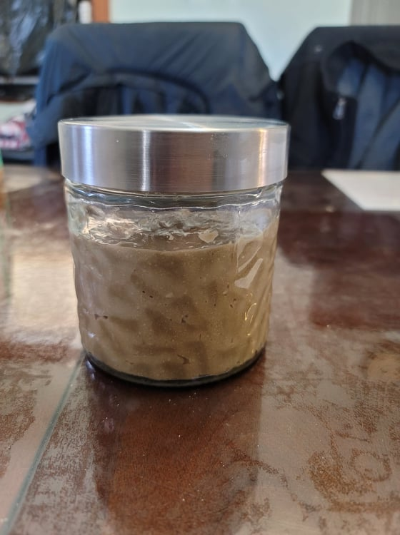

Sunny Butter

Ingredients:
- 1 cup Toasted sunflower seeds
- 1/2 tsp Salt or Smoked salt
- 1/2 cup Honey or Maple syrup
Instructions:
- Place the sunflower seeds into a food processor and grind.
- Add in the salt and honey and process until it forms a ball.